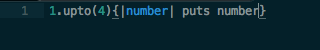
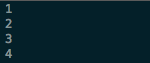
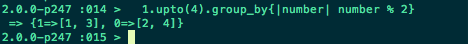

MB
MB
Many programs require certain operations to be repeated over and over gain to accomplish a result. In Ruby, one tools that can create a loop is call an iterator. An iterator processes a list or collection of items one by one.


In this example, the method upto is being used to count up from 1 to 4. The code between { and } is being looped upon. number is being used as a variable for every number between 1 to 4; using puts we are looping through and displaying each number. Collections, such as this range, in Ruby allow for the organization of large amounts of data. Iteration methods are especially useful to use on elements of an array or hash.
The Enumerable module suppplies about 20 useful counting and iteration related methods that search, sort and maniplulate collections. One of these methods is group_by, which groups the collection by the result of the block. A hash is returned, where they keys are the evaulated results from the block and the values are arrays of elements in the collection that correspond to the key. As stated in my Array & Hashes blog post, hashes are a collection of key/value pairs.

In this example, the numbers 1 to 4 are passed to the block. It receives each number as the parameter number. The group that each number is placed into is determined by the result of the block, number % 2, whose result can be either 0 or 1. They key 0's corresponding value is an array containing numbers from 1 to 4 that are evenly divisible by 2(number % 2 = 0 = an even number). The key 1's corresponding value is an array containing the numbers from the same range that leave a remainder of 1 rather than 0.